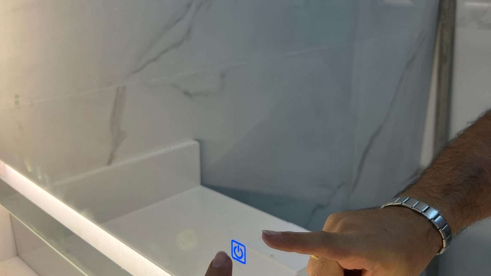
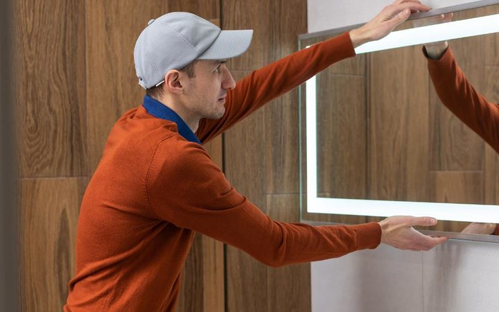
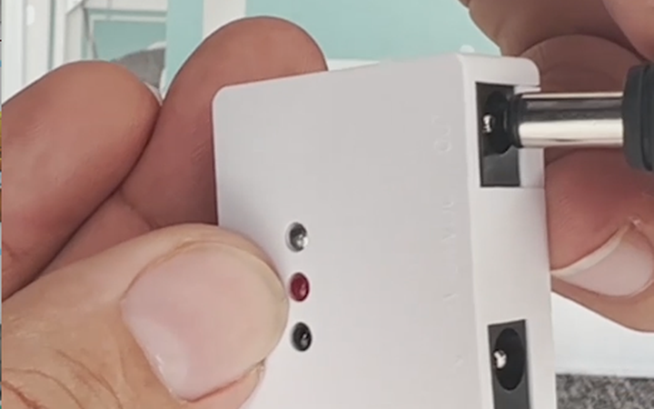
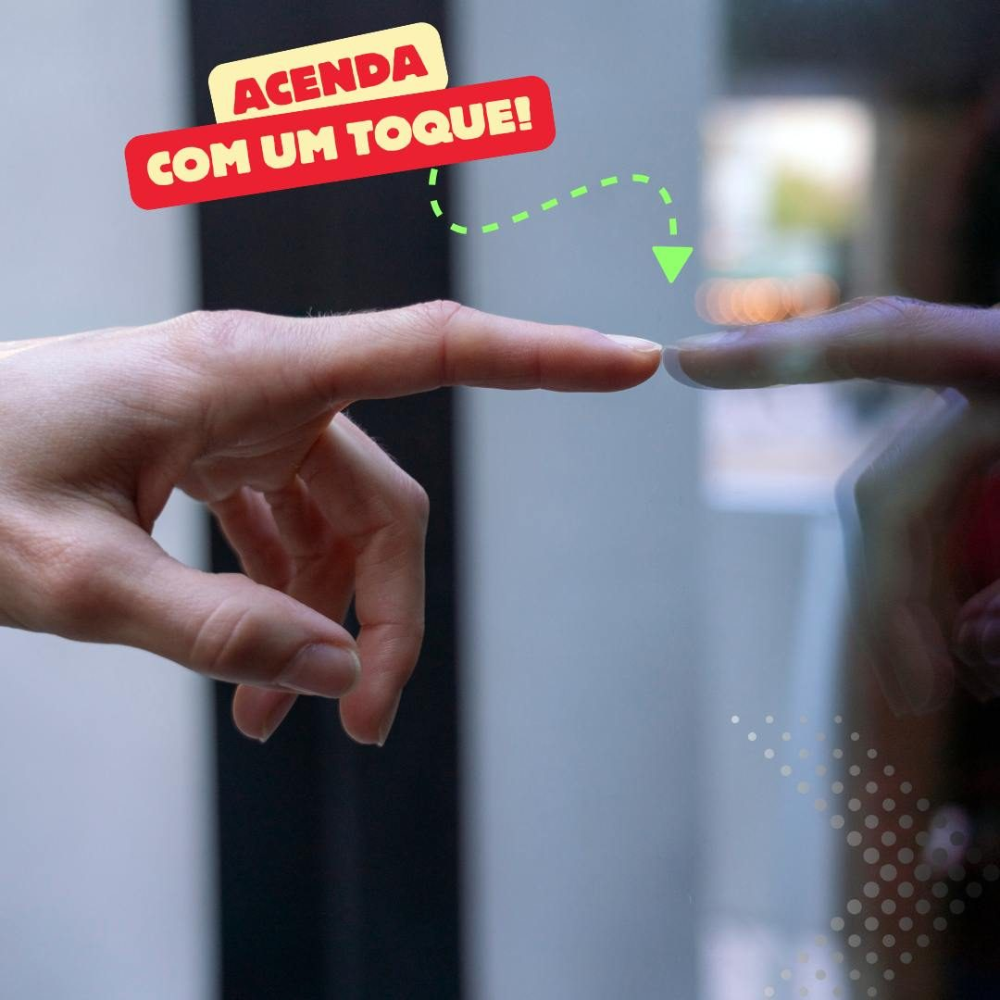
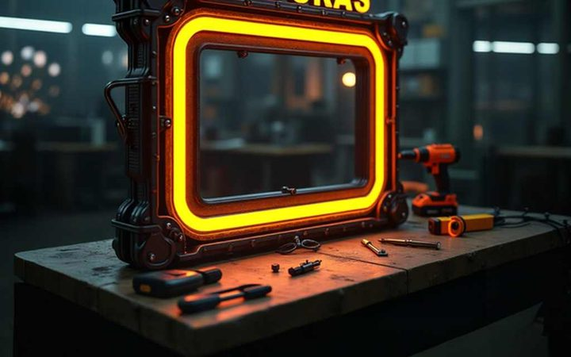
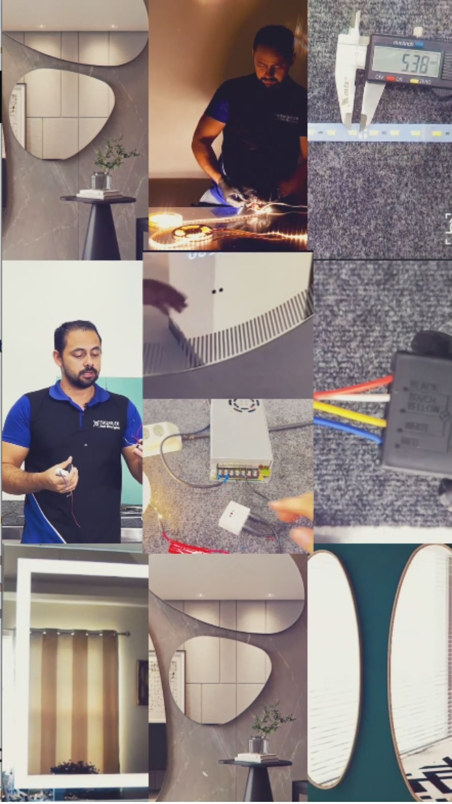

Compre o espelho
Após a compra do espelho ideal para utilização de luz LED e modificado para receber os dispositivos, você estará pronto para o próximo passo.
Descubra o curso mais completo do mercado sobre espelhos LED com touch screen. Do básico ao avançado, você aprenderá a criar espelhos modernos e funcionais com acabamento profissional — mesmo sem nunca ter mexido com elétrica.
Começe agora mesmoGarantia incondicional de 7 dias · Suporte via WhatsApp
Após a compra do espelho ideal para utilização de luz LED e modificado para receber os dispositivos, você estará pronto para o próximo passo.
Agora é só comprar o dispositivo ideal para cada potência de LED e instalar no espelho. Simples assim — você terá acesso a todas as dicas.
Nunca mais dependa de tutoriais soltos e confusos. Aprenda, passo a passo, como fazer um espelho com LED e touch screen mesmo que você nunca tenha mexido com elétrica antes.



Combine beleza e tecnologia em um único projeto. Este curso ensina a montagem completa de espelho com luz e touch, incluindo sensor, LED, moldura e acabamento. E ainda: como evitar os erros mais comuns.
Começe agora mesmoAssista onde e quando quiser. Todo o conteúdo fica disponível por tempo ilimitado, com liberdade total para estudar no seu ritmo.
Do básico ao avançado, sem enrolação. Cada aula é pensada para quem está começando do zero, com linguagem simples e direta.
Tire dúvidas com quem realmente entende. Nossa equipe está disponível via WhatsApp, e-mail e comunidade.
Receba acesso a novos módulos, atualizações e bônus com as inovações mais recentes do mercado de espelhos LED.

E-books, planilhas, moldes e até arquivos 3D prontos para você imprimir ou usar nos seus projetos.
Transforme conhecimento em renda. Aprenda a montar, precificar e vender espelhos LED personalizados.
“Achei que seria difícil, mas consegui montar meu primeiro espelho na primeira semana!”
“Já fiz 4 espelhos e vendi todos! O curso ensina tudo passo a passo.”
“O módulo de vendas me ajudou a montar meu perfil no Instagram e atrair clientes.”
Um treinamento 100% online, completo, direto ao ponto e feito para iniciantes ou profissionais que querem ir além.
Você vai aprender:
Acesso vitalício, atualizações frequentes e suporte dedicado.
Começe agora mesmo
Por dentro do curso
Nada de achismos ou métodos confusos. Aqui você segue um passo a passo comprovado para montar espelhos inteligentes com qualidade profissional. Ideal para quem quer aprender certo desde o início.

Alguns dos bônus que você recebe ao comprar o curso.
Aprenda a projetar em 3D e mostrar seus projetos com muito mais profissionalismo.
Coloque sua logomarca ou o nome do cliente no espelho, levando um diferencial para o seu negócio.
Receba uma lista atualizada semanalmente com todos os vendedores de dispositivos e economize.
Sites, banners e anúncios para redes sociais, OLX e muito mais — milhares de projetos prontos para personalizar.
Aprenda a postar nas redes sociais, vender, modificar os criativos e muito mais.
Tópicos complementares, corte de molduras, projetos prontos e outros bônus liberados ao longo do curso.

Este curso ensina a montagem completa de espelho com luz e touch, incluindo sensor, LED, moldura e acabamento.
Aqui vamos ensinar como utilizar e quais os melhores dispositivos para seu projeto. Chega de dispositivo fraco que queima rápido — utilize dispositivos de toque com potência para ligar luzes 127V ou 220V de alta potência.
Começe agora mesmoPerguntas e respostas
Sim! O curso foi feito especialmente para iniciantes. Todo o conteúdo é explicado passo a passo, com linguagem simples, sem complicação técnica. Você vai aprender do zero até a montagem profissional.
Você só precisa das ferramentas básicas para iniciar (kit de chaves fenda phillips, furadeira, kit de brocas). Ao longo do curso, indicamos quais ferramentas e materiais usar, desde as mais simples até as ideais para projetos mais avançados e profissionais.
Isso depende do seu ritmo, mas muitos alunos conseguem montar o primeiro espelho nas primeiras semanas. As aulas são práticas e diretas, pensadas para acelerar seu aprendizado.
Sim! Você tem 7 dias para testar o curso. Se não ficar satisfeito, devolvemos 100% do seu investimento, sem burocracia.
Além das videoaulas, você terá acesso a e-books, moldes, planilhas de custo, arquivos para impressão, lista de fornecedores, certificado e suporte via WhatsApp. Tudo em um só lugar, com acesso vitalício.
Guias técnicos sobre montagem, componentes e venda de espelhos LED — conteúdo aberto, sem cadastro.
Materiais, fita, fonte, sensor e acabamento — o passo a passo completo da primeira montagem.
Tipos, espessura de vidro que cada um atravessa e por que os baratos queimam em meses.
2835 ou 5050, temperatura de cor e como calcular a fonte com a folga correta.
Como montar o custo real e precificar sem descobrir o prejuízo no fim do mês.
Não acende, pisca ou parou depois de semanas? A causa provavelmente está aqui.
Onde anunciar, como fotografar e o que faz o cliente escolher você e não o mais barato.
Curso completo, do zero ao profissional. Aprenda a fabricar, instalar e até vender espelhos inteligentes. Acesso vitalício + bônus + suporte.
Quero garantir minha vaga